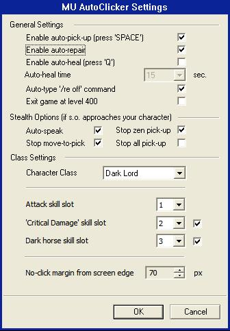
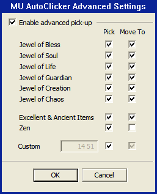

//pick 12 4MUAutoClicker — это программа-автокликер для игры MU Online, которая автоматизирует рутинные действия персонажа: атаку монстров, подбор предметов, лечение и ремонт экипировки.
MUAutoClicker состоит из нескольких файлов (модулей), каждый выполняет свою роль:
| Файл | Назначение |
|---|---|
LordOfMU.exe |
Лаунчер — запускает программу, определяет версию Windows, загружает модули |
Bootstrapper.dll |
Загрузчик — устанавливает системный хук для обнаружения окна игры |
MUAutoLoader.dll |
Загрузчик DLL — перехватывает создание окна игры и внедряет основные модули |
MUAutoClicker.dll |
Автокликер — управляет кликами, настройками, GUI диалогами |
MUEliteClicker.dll |
Ядро системы — перехватывает сетевые пакеты, фильтрует предметы, обрабатывает команды |
main.exe и перехватывает сетевые пакеты между клиентом и сервером. Это позволяет автоматически реагировать на события в игре (появление предметов, получение урона) и отправлять команды от имени игрока (подбор предмета, перемещение).
После внедрения в игровой клиент, все сетевые пакеты проходят через цепочку фильтров. Каждый фильтр может анализировать, изменять или генерировать пакеты:
| Класс | Модуль | Особенности |
|---|---|---|
| Dark Lord | DarkLordClickerJob | Поддержка призыва и конной атаки |
| Energy Elf | EElfClickerJob | Атака молнией |
| Agility Elf | AElfClickerJob | Дальнобойная атака |
| Blade Knight | BKClickerJob | Атака копьём |
| Dark Wizard | SMClickerJob | Магические атаки |
| Magic Gladiator | MGClickerJob | Комбинированные атаки |
Убедитесь, что в папке программы присутствуют все файлы:
📁 Папка программы/
├── LordOfMU.exe ← Основной лаунчер (запускайте его!)
├── Bootstrapper.dll ← Загрузчик хуков
├── MUAutoLoader.dll ← Загрузчик DLL в игру
├── MUAutoClicker.dll ← Автокликер (настройки, GUI)
├── MUEliteClicker.dll ← Ядро системы (пакеты, команды)
└── main.exe ← Игровой клиент MU OnlineСкопируйте все DLL файлы и LordOfMU.exe в ту же папку, где находится main.exe (игровой клиент MU Online).
Щёлкните правой кнопкой мыши по LordOfMU.exe → «Запуск от имени администратора». Программа автоматически определит версию Windows и выберет способ внедрения.
Лаунчер автоматически загрузит Bootstrapper.dll, который установит системный хук и затем запустит main.exe через ShellExecute.
Когда игра создаёт своё окно, хук WH_CBT обнаруживает его и автоматически внедряет MUEliteClicker.dll и MUAutoClicker.dll в процесс игры.
Нажмите F9 в игре для открытия главных настроек или Shift+F9 для расширенных настроек автоподбора.
Для продвинутых пользователей — последовательность действий при запуске:
LordOfMU.exe вызывает rundll32.exe Bootstrapper.dll,Load2 (Windows Vista+)Bootstrapper.dll загружает MUAutoLoader.dll и вызывает DllGetClassObject()MUAutoLoader.dll устанавливает хук SetWindowsHookEx(WH_CBT, ...)Bootstrapper.dll запускает main.exe (через ShellExecute)CBTProc перехватывает создание окна игры (HCBT_CREATEWND)RunClient() подменяет оконную процедуру (SetWindowLongPtr)WM_NULL загружает MUEliteClicker.dll через LoadLibrary()MUEliteClicker.dll перехватывает WinSock функции (WSASend, WSARecv)
Bootstrapper.dll через LoadLibrary(), а на Windows Vista и новее — через rundll32.exe для обхода ограничений UAC.

| Параметр | Описание |
|---|---|
| Enable auto-pick-up (press 'SPACE') | Включает автоподбор предметов. Активируется при нажатии клавиши SPACE (пробел) в игре. Когда включено, программа автоматически подбирает предметы по настроенным фильтрам. |
| Enable auto-repair | Автоматический ремонт экипировки. Программа периодически отправляет команду ремонта, чтобы предметы не сломались. |
| Enable auto-heal (press 'Q') | Автоматическое лечение персонажа. Активируется клавишей Q. Использует зелья лечения с заданным интервалом. |
| Auto-heal time | Интервал автолечения в секундах (0, 1, 3, 5, 7, 10, 15 сек). |
| Auto-type '/re off' command | Автоматически отправляет команду /request off при запуске кликера для отключения запросов на торговлю. |
| Exit game at level 400 | Автоматически завершает игру при достижении уровня 400. |
Эти опции активируются, когда к вашему персонажу приближается другой игрок:
| Параметр | Описание |
|---|---|
| Auto-speak | Автоматические ответы на сообщения (чтобы казалось, что вы онлайн). |
| Stop zen pick-up | Приостановить подбор дзен (золота), когда рядом другой игрок. |
| Stop move-to-pick | Приостановить телепортацию к предметам (подбирать только рядом). |
| Stop all pick-up | Полностью приостановить автоподбор. |
Выберите класс вашего персонажа из списка. Настройки атаки зависят от выбранного класса:

Каждый тип предмета имеет два флажка:
| Тип предмета | HEX код | Описание |
|---|---|---|
| Jewel of Bless (Бласс) | 0x0E0D | Камень благословения — улучшение предметов |
| Jewel of Soul (Соул) | 0x0E0E | Камень души — улучшение предметов с шансом разрушения |
| Jewel of Chaos (Хаос) | 0x0C0F | Камень хаоса — создание предметов |
| Jewel of Life (Лайф) | 0x0E10 | Камень жизни — добавление опций |
| Jewel of Creation (Криэйшн) | 0x0E16 | Камень создания |
| Jewel of Guardian (Гуардиан) | 0x0E1F | Камень хранителя |
| Excellent (Экселент) | Особый | Любой предмет с опцией Excellent |
| Zen (Золото) | 0x0E0F | Золотые монеты |
| Custom (Пользовательский) | Настраиваемый | Задаётся вручную командой //pick |
//set_pick_opt bless on on. Это означает: «подбирать бласс с перемещением к нему».
Каждый предмет в MU Online имеет уникальный числовой код, состоящий из двух байтов. Для работы с автоподбором важно понимать, как этот код формируется.
//itemcode onСамый простой способ — включить отображение кодов предметов в игре:
//itemcode on
Это включит отображение кодов. Теперь при подборе любого предмета в чате появится сообщение вида:
>> Item code: 14 13 0
В чате появится три числа: группа, номер и грейд.
Например: >> Item code: 14 13 0 означает группу 14, номер 13, грейд 0.
//pick
Команда: //pick 14 13 — теперь этот предмет будет подбираться автоматически.
//itemcode off
Если вы знаете HEX-код предмета из документации игры:
Пример: Jewel of Bless = 0x0E0D
Шаг 1: Разделяем на байты
Старший байт (High): 0x0E = 14 (десятичное)
Младший байт (Low): 0x0D = 13 (десятичное)
Шаг 2: Формируем команду
//pick 14 13
Проверка: (14 << 8) | 13 = (14 × 256) + 13 = 3584 + 13 = 3597 = 0x0E0D ✓| Предмет | HEX-код | Старший байт (группа) | Младший байт (номер) | Команда //pick |
|---|---|---|---|---|
| Jewel of Bless | 0x0E0D | 0x0E = 14 | 0x0D = 13 | //pick 14 13 |
| Jewel of Soul | 0x0E0E | 0x0E = 14 | 0x0E = 14 | //pick 14 14 |
| Jewel of Chaos | 0x0C0F | 0x0C = 12 | 0x0F = 15 | //pick 12 15 |
| Jewel of Life | 0x0E10 | 0x0E = 14 | 0x10 = 16 | //pick 14 16 |
| Jewel of Creation | 0x0E16 | 0x0E = 14 | 0x16 = 22 | //pick 14 22 |
| Jewel of Guardian | 0x0E1F | 0x0E = 14 | 0x1F = 31 | //pick 14 31 |
| Zen (золото) | 0x0E0F | 0x0E = 14 | 0x0F = 15 | //pick 14 15 |
Из исходного кода GameCommands.cpp, строка 550:
// Из файла: src/LordOfMUdll/GameCommands.cpp
// Функция: CPickCommandHandler::ProcessCommand()
// Пользователь вводит: //pick 12 4
// szArg0 = "12" (первый аргумент — старший байт)
// szArg1 = "4" (второй аргумент — младший байт)
WORD wCode = ((atoi(szArg0) & 0xFF) << 8) | (atoi(szArg1) & 0xFF);
// Пошаговое вычисление для //pick 12 4:
// atoi("12") = 12 → 12 & 0xFF = 0x0C (12)
// Сдвиг влево на 8 бит → 0x0C << 8 = 0x0C00 (3072)
// atoi("4") = 4 → 4 & 0xFF = 0x04 (4)
// Побитовое ИЛИ → 0x0C00 | 0x04 = 0x0C04 (3076)
//
// Результат: wCode = 0x0C04 — код предмета для поиска//pick X Y: X — это категория/группа предмета, Y — номер предмета в группе. Эти два числа образуют уникальный код предмета. Используйте //itemcode on для автоматического определения кодов.
Команда //pick поддерживает необязательный третий аргумент — грейд (уровень улучшения):
// Формат: //pick <группа> <номер> [грейд]
//pick 14 13 ← Подбирать ВСЕ Jewel of Bless (любого грейда)
//pick 14 13 0 ← Подбирать только грейд 0 (маска = 1 << 0 = 0x0001)
//pick 14 13 5 ← Подбирать только грейд 5 (маска = 1 << 5 = 0x0020)
// В коде:
WORD wMask = 0xFFFF; // По умолчанию: все грейды
if (szArg2[0] != 0)
wMask = 1 << atoi(szArg2); // Если указан грейд: только этотСистема автоподбора работает следующим образом:
Пакет CMeetItemPacket содержит: ID предмета, тип, координаты X/Y
Извлекает тип предмета из пакета и сравнивает с настроенными фильтрами
Сначала проверяет пользовательский список (//pick), затем встроенные типы (Bless, Soul и т.д.), затем Excellent-предметы
Если флаг «Move» включён: предмет добавляется в очередь подбора с телепортацией (отдельный поток). Если «Move» выключен: подбор без перемещения (с задержкой 2 сек).
С перемещением: Запомнить позицию → Телепорт к предмету (350мс) → Ожидание (850мс) → Отправка пакета подбора → Ожидание (700мс) → Телепорт обратно
Без перемещения: Ожидание 2 секунды → Отправка пакета подбора
Программа телепортирует персонажа к предмету, подбирает его, и возвращает обратно.
Последовательность действий:
1. Приостановить скрипт (если активен)
2. Подождать 350 мс
3. Телепортировать к предмету (x, y)
4. Подождать 850 мс
5. Отправить CPickItemPacket
6. Подождать 700 мс
7. Телепортировать обратно (xOld, yOld)
8. Возобновить скриптПрограмма подбирает только предметы рядом с персонажем без телепортации.
Последовательность действий:
1. Предмет попадает в очередь
2. Через 2 секунды отправляет
пакет CPickItemPacket
3. Персонаж не двигается
Подходит для незаметного подбора,
когда рядом другие игроки.// Включить автоподбор
//autopick on
// Настроить подбор Bless с перемещением
//set_pick_opt bless on on
// Настроить подбор Soul без перемещения
//set_pick_opt soul on off
// Добавить пользовательский предмет
//pick 14 13
// Добавить ещё один предмет
//pick 12 15
// Очистить список пользовательских предметов
//pick clear
// Установить дистанцию подбора
//pdist 10Перед подбором программа проверяет расстояние между персонажем и предметом:
// Из AutoPickupFilter.cpp, строки 104-105:
int xdiff = abs((int)bPlX - (int)x); // Разница по X
int ydiff = abs((int)bPlY - (int)y); // Разница по Y
// Предмет подбирается только если:
if (m_iDist < 0 || (xdiff <= m_iDist && ydiff <= m_iDist))
// m_iDist < 0 означает «без ограничения дистанции»
// Иначе: обе координаты должны быть в пределах m_iDist клеток//pdist 10 чтобы подбирать предметы только в радиусе 10 клеток. Значение -1 (по умолчанию) отключает ограничение дистанции.
//pick 12 4Рассмотрим пошагово, что происходит, когда вы вводите команду //pick 12 4 в чат игры.
Вы вводите в чат: //pick 12 4 и нажимаете Enter.
Клиент формирует пакет обычного чат-сообщения и отправляет его через WinSock.
MUEliteClicker.dll перехватывает вызов WSASend(). Пакет попадает в цепочку фильтров.
Фильтр CGameCommands проверяет: начинается ли сообщение с //?
Да! Обнаружена команда pick с аргументами "12 4".
// CPickCommandHandler::ProcessCommand("pick", "12 4")
// Парсинг аргументов:
szArg0 = "12" // Старший байт (категория)
szArg1 = "4" // Младший байт (номер предмета)
szArg2 = "" // Грейд не указан
// Проверка: "12" != "clear" и szArg1 не пустой → это код предмета// Формула вычисления:
WORD wCode = ((atoi("12") & 0xFF) << 8) | (atoi("4") & 0xFF);
// Пошагово:
// atoi("12") = 12
// 12 & 0xFF = 12 (0x0C) — обрезка до одного байта
// 12 << 8 = 3072 (0x0C00) — сдвиг: байт становится старшим
// atoi("4") = 4
// 4 & 0xFF = 4 (0x04) — обрезка до одного байта
// 0x0C00 | 0x04 = 0x0C04 — объединение двух байтов
// Итоговый код предмета: 0x0C04
// Маска грейда (грейд не указан):
WORD wMask = 0xFFFF; // Все грейды подходят
// Упаковка в DWORD:
DWORD dwData = (0xFFFF << 16) | 0x0C04 = 0xFFFF0C04;// Вызов: pPickFilter->SetParam("pick", &dwData);
// В AutoPickupFilter::SetParam():
WORD wCode = LOWORD(0xFFFF0C04) = 0x0C04; // Код предмета
WORD wMask = HIWORD(0xFFFF0C04) = 0xFFFF; // Маска грейда
// Добавление в словарь m_vItemList:
m_vItemList[0x0C04] = 0xFFFF;
// Ключ: 0x0C04 (код предмета)
// Значение: 0xFFFF (все грейды)// В чате появляется сообщение:
">> pick 12 4 [OK]."Теперь, когда сервер сообщит о предмете с кодом 0x0C04 на земле:
// Сервер отправляет CMeetItemPacket с информацией о предметах на земле
// AutoPickupFilter::FilterRecvPacket() обрабатывает пакет:
// Для каждого предмета в пакете:
WORD wType = pktMItem.GetItemType(i); // Например: 0xDC04
WORD wMask = 1 << (wType >> 12); // 1 << 0xD = 0x2000
wType &= 0x0FFF; // 0xDC04 & 0x0FFF = 0x0C04
// Поиск в словаре:
std::map<WORD, WORD>::iterator it = m_vItemList.find(0x0C04);
// Найдено! it->second = 0xFFFF
// Проверка маски грейда:
(wMask & it->second) = (0x2000 & 0xFFFF) = 0x2000 != 0 → СОВПАДЕНИЕ!
// Предмет будет подобран автоматически! ✓//pick 12 4 регистрирует код предмета 0x0C04 в фильтре автоподбора. Когда такой предмет появится на земле в зоне видимости, программа автоматически подберёт его. Если включён режим перемещения (Move), персонаж телепортируется к предмету, подберёт его и вернётся обратно.
Все команды вводятся в чат игры с префиксом //.
| Команда | Формат | Описание |
|---|---|---|
//autopick |
//autopick <on|off> |
Включить/выключить систему автоподбора. При запуске через GUI включается автоматически. |
//pick |
//pick <группа> <номер> [грейд] |
Добавить предмет в список подбора. Пример: //pick 14 13 (Bless). |
//pick clear |
//pick clear |
Очистить весь пользовательский список подбора. |
//set_pick_opt |
//set_pick_opt <тип> <pick> <move> |
Настроить подбор встроенного типа. Типы: bless, soul, chaos, jol, joc, jog, exl, zen, custom.Пример: //set_pick_opt bless on on |
//pdist |
//pdist <дистанция> |
Максимальная дистанция подбора в клетках. -1 = без ограничений. |
//drop |
//drop <группа> <номер> [грейд] |
Добавить предмет в список автосброса (автоматически выбрасывать при получении). |
//itemcode |
//itemcode <on|off> |
Показывать коды предметов при подборе. |
| Команда | Формат | Описание |
|---|---|---|
//set_stealth_opt |
//set_stealth_opt <опция> <on|off> |
Настройка скрытного подбора. Опции:susp_zen_pick — приостановить подбор дзенsusp_move_pick — приостановить телепортацию к предметамsusp_pick — приостановить весь автоподбор |
//autosay |
//autosay <on|off> |
Автоматические ответы в чате при приближении игроков. |
| Команда | Формат | Описание |
|---|---|---|
//gt |
//gt <x> <y> |
Телепортировать персонажа к указанным координатам. |
//die |
//die |
Симуляция смерти персонажа (отображается локально). |
| Команда | Формат | Описание |
|---|---|---|
//script |
//script <load файл|on|off|toggle> |
Загрузка и управление скриптами автоматизации. |
//run |
//run <имя_файла> |
Запуск файла скрипта. |
| Команда | Формат | Описание |
|---|---|---|
//exit400 |
//exit400 <on|off> |
Автовыход при достижении уровня 400. |
//throw / //use |
//throw <x> <y> [z] |
Бросить или использовать предмет по координатам. |
//help |
//help |
Показать список всех доступных команд. |
Пакеты — это блоки данных, которые игровой клиент и сервер отправляют друг другу. Каждое действие в игре (перемещение, атака, подбор предмета) — это отправка пакета.
После внедрения в игровой клиент, MUEliteClicker.dll заменяет стандартные функции WinSock:
// Перехваченные функции:
WSASend() → Перехват исходящих пакетов (клиент → сервер)
WSARecv() → Перехват входящих пакетов (сервер → клиент)
connect() → Перехват подключений к серверу
// Все пакеты проходят через цепочку фильтров:
// FilterSendPacket() — для исходящих
// FilterRecvPacket() — для входящихСервер отправляет этот пакет, когда предмет падает на землю:
// Структура пакета CMeetItemPacket (Сервер → Клиент):
// Формат: C2 [LenHi] [LenLo] 20 [Count] [Item1] [Item2] ...
// Пример сырых данных:
C2 00 1B 20 02 ← Заголовок: C2-пакет, длина 0x001B, тип 0x20, 2 предмета
80 67 35 86 0D 0A A7 00 00 0D 00 ← Предмет 1
80 68 35 88 20 08 60 00 00 B0 00 ← Предмет 2
// Каждый предмет содержит:
// - ID предмета (2 байта) ← для отправки пакета подбора
// - Координаты X, Y (2 байта) ← положение на карте
// - Тип предмета (закодирован) ← для фильтрации
// - Данные предмета (7 байт) ← для проверки Excellent и т.д.Программа отправляет этот пакет серверу для подбора предмета:
// Структура пакета CPickItemPacket (Клиент → Сервер):
// Формат: C3 06 00 22 [ItemId_Lo] [ItemId_Hi]
// Пример:
C3 06 00 22 67 80 ← Подобрать предмет с ID 0x8067
// Где:
// C3 — тип пакета (зашифрованный C3)
// 06 — длина пакета (6 байт)
// 00 22 — код операции «подобрать предмет»
// 67 80 — ID предмета (из CMeetItemPacket)// Используется для телепортации при автоподборе:
// Формат: C1 07 DF [IdHi] [IdLo] [X] [Y]
// Программа отправляет два пакета:
// 1. Серверный пакет (recv) — «Я переместился»
// 2. Клиентский пакет (send) — «Обновить позицию»
// Это создаёт иллюзию мгновенного перемещенияExcellent предметы определяются по специальным битам в данных предмета:
// Из AutoPickupFilter.cpp, строки 142-149:
BYTE* pItemCode = pktMItem.GetItemData(i) + 4;
// Проверка Excellent-битов:
if ((pItemCode[3] & 0x3F) || (pItemCode[4] & 0x01))
{
// Это Excellent предмет!
// pItemCode[3] биты 0-5: Excellent-опции
// pItemCode[4] бит 0: Дополнительная Excellent-опция
}MUAutoClicker поддерживает систему скриптов для автоматизации сложных последовательностей действий.
; Строки, начинающиеся с ";" — комментарии
; Определение констант
#define $CharName = BloodyMary
#define $StartedMsg = Скрипт запущен...
; Доступные команды скриптов:
:msg текст — Показать системное сообщение в чате
:say текст — Отправить сообщение в чат (или //команду)
:delay миллисекунды — Задержка выполнения
:lock — Заблокировать кликер (приостановить атаку)
:unlock — Разблокировать кликер
:repeat — Начало цикла
:loop N — Конец цикла (повторить N раз); Скрипт фарма между двумя локациями
; Файл: farm_route.txt
#define $StartMsg = >> Начинаем фарм-маршрут
:say //pick clear
:say //pick 14 13 ; Подбирать Jewel of Bless
:say //pick 14 14 ; Подбирать Jewel of Soul
:say //pick 12 15 ; Подбирать Jewel of Chaos
:say //set_pick_opt exl on on ; Подбирать Excellent с перемещением
:say //autopick on ; Включить автоподбор
:msg $StartMsg
:repeat
:delay 5000 ; Подождать 5 секунд
:lock ; Приостановить кликер
:say /move Devias3 ; Переместиться в Devias3
:unlock ; Возобновить кликер
:delay 60000 ; Фармить 60 секунд
:lock
:say /move Devias2 ; Переместиться в Devias2
:unlock
:delay 60000 ; Фармить 60 секунд
:loop 10 ; Повторить 10 раз
:msg >> Фарм-маршрут завершён!// Загрузить и запустить скрипт:
//script load farm_route.txt
//script on
// Или одной командой:
//run farm_route.txt
// Остановить скрипт:
//script off
// Переключить (вкл/выкл):
//script toggleВведите в чат //itemcode on, затем подберите предмет вручную. В чате появится сообщение с его кодом. Используйте эти числа в команде //pick.
Вводите команду //pick несколько раз — каждый новый предмет добавляется к списку, не заменяя предыдущие:
//pick 14 13 ← Добавить Bless
//pick 14 14 ← Добавить Soul (Bless остаётся в списке)
//pick 12 15 ← Добавить Chaos (все три предмета подбираются)Используйте команду //pick clear — она удалит все пользовательские коды из списка. Встроенные типы (Bless, Soul через //set_pick_opt) не затрагиваются.
При телепортации (варпе) на другую карту программа автоматически очищает очереди подбора, чтобы не подбирать предметы со старой карты. Автоподбор остаётся включённым и продолжит работать с новыми предметами на новой карте.
//pick 14 13?Первое число (14) — это группа/категория предмета (старший байт HEX-кода), второе число (13) — номер предмета внутри группы (младший байт). Вместе они образуют уникальный идентификатор: 0x0E0D = Jewel of Bless.
Используйте третий аргумент команды //pick:
//pick 14 13 0 ← Только грейд 0
//pick 14 13 5 ← Только грейд 5
//pick 14 13 ← Все грейды (по умолчанию)Используйте опции скрытности в настройках F9 (раздел «Stealth Options»):
Эти опции активируются автоматически, когда к вашему персонажу приближается другой игрок.
| Клавиша | Действие |
|---|---|
| F9 | Открыть главные настройки |
| Shift+F9 | Открыть расширенные настройки автоподбора |
| SPACE | Запустить/остановить автокликер |
| Q | Включить/выключить автолечение |
Программа использует 16-битные (2 байта, WORD) коды предметов:
Формат WORD: 0xHHLL
HH = старший байт (High Byte) = группа/категория
LL = младший байт (Low Byte) = номер предмета
Преобразование HEX → команда:
0x0E0D → //pick 14 13 (0x0E=14, 0x0D=13)
0x0C0F → //pick 12 15 (0x0C=12, 0x0F=15)
Преобразование команда → HEX:
//pick 12 4 → (12 << 8) | 4 = 0x0C04